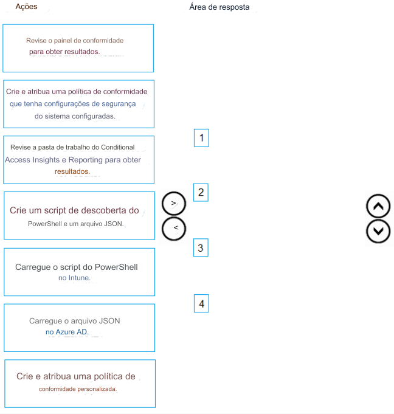

39- ARRASTE E SOLTE -
Você tem uma assinatura do Microsoft 365 que contém 1.000 dispositivos Windows 11 registrados no Microsoft
Intune.
Você planeja criar e monitorar os resultados de uma política de conformidade usada para validar a versão do BIOS dos
dispositivos.
Quais são as quatro ações que você deve executar em sequência? Para responder, mova as ações apropriadas
da lista de ações para a área de resposta e organize-as na ordem correta.
